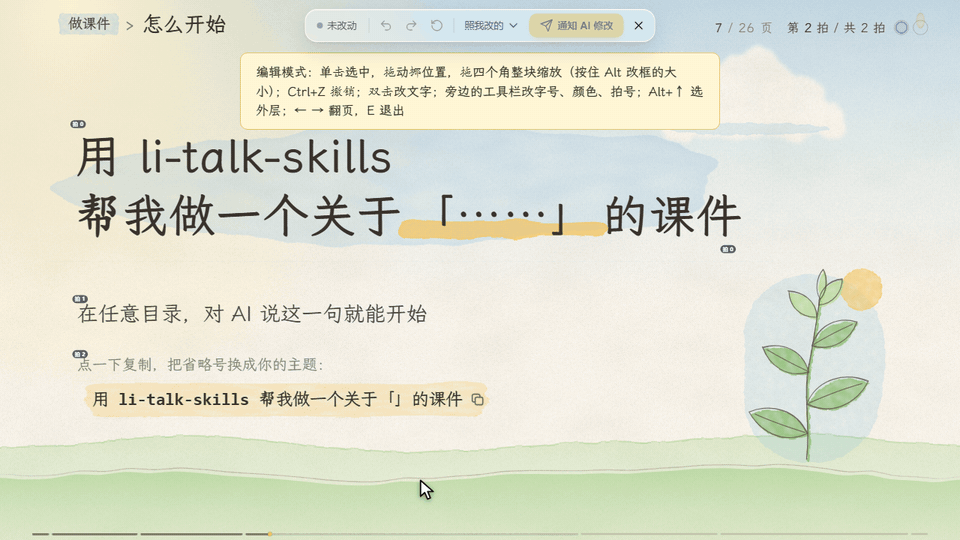

一句话，生成一份
能直接上台讲的课件
支持在线编辑、16 种风格的 AI 演讲课件 Skill。把主题、笔记或讲稿交给 AI，它写讲稿、选风格、排版、加动效，做成像幻灯片一样一拍一拍翻的 HTML 课件：双击离线打开，带演讲者视图与计时彩排。
风格
16 种风格，每种都有自己的形象
不是换个配色：每种风格有自己的版式、组件、翻页动作和一个会走动、会说话的小形象。点一张就能从第一页开始翻看。
在线编辑
按 E 直接改，AI 帮你合进源码
不用懂代码，也不用来回描述「把那个往左挪一点」。打开课件按 E，像用 PPT 一样直接改；改完一键交给 AI，它照你的改动写回源码、跑完自检。离线、在线都能改。

- 双击改字，单击选中改文字、设重点词；选到文字才出现字号和颜色。
- 拖动、缩放、隐藏拖角整块等比缩放，按住 Alt 改框大小；转过角度的块也一样准。
- 撤销重做、改拍号、改讲词Ctrl+Z / Ctrl+Y；调整第几拍出现；演讲者视图里点讲词就能改。
- 一键交给 AI改动自动保存；AI 用类名和章节样式写回源码，文案还会给优化建议。
在线编辑推荐
对 AI 说一句，浏览器打开就是编辑模式。改完点「通知 AI 修改」，AI 自动合进源码，页面跟着刷新。
我要在线改这份课件
离线编辑
双击打开课件按 E 就能改，不用开任何服务。改完点「复制修改给 AI」，贴进对话就行。
双击 index.html，按 E
在线编辑开着的时候，双击打开的课件按 E 也会直接切过去，离线改了一半的一起带上。网页上的教程和样册也能按 E 体验编辑（改动不保存），装好后在本机打开就能真的改。
功能
从一句话到上台，全流程都替你想好了
不只是模板：AI 按九步流程推进，在提纲、讲稿、风格、试做、过稿五处停下来等你确认；每一步都有自检兜底。
一句话生成
只有一个主题、零散笔记和截图、或现成讲稿，三种起点都能开工；AI 只问缺的部分。
五处确认，你说了算
提纲、讲稿、风格、先做 3 页、过稿，每一处都等你说「可以」；换对话、换模型也能接着做。
演讲者视图
按 S 打开：当前拍、下一拍、讲词、计时、彩排；黑屏、激光笔、总览跳页，翻页笔直接用。
5 种尺寸自检
真浏览器逐页逐拍检查溢出、遮挡、对比度、字号；看不了图的模型也能照报告把问题改干净。
一拍一拍的动效
每页拆成几拍，点一下出一块；讲过的自动变淡，形象会走到正在讲的地方，听众始终跟得上。
离线、零依赖
纯 HTML，双击就能打开，不联网、不装软件；手机上自动变成竖屏阅读模式，发给别人也能看。
上手
三步开始
装上
直接对 AI 说一句，它会自己装好；没有 Node 也会先帮你装。
从 GitHub 仓库 xiaoli1999/li-talk-skills 安装到全局，装好后打开新手教程带我过一遍
说一句话
在任意文件夹里告诉 AI 你要讲什么，剩下的它一步步带你做。
用 li-talk-skills 帮我做一个关于「……」的课件
上台讲
双击 index.html 放映，按 S 打开演讲者视图；想改哪里，按 E 直接改，或者对 AI 说：
我要在线改这份课件
先花五分钟，跟着教程走一遍
教程本身就是一份用 li-talk-skills 做的水彩田园课件：安装、九步流程、选风格、按 E 自己动手改、翻页和演讲者视图、常用命令，边看边体验。